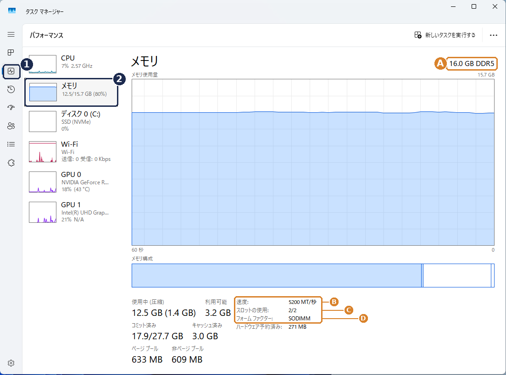
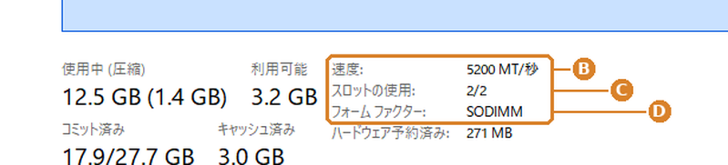

1パソコンの型番で探す任意
メーカー製パソコン（NEC・富士通・Dynabookなど）は、型番で対応表（PIO）に載っていることがあります。
2スペックで探す
カスタムメイド（BTO）パソコンや、型番で見つからない場合はこちら。メーカーの仕様表か、Windowsの「タスクマネージャー」で分かる内容を選んでください。
タスクマネージャーで調べる方法（仕様表が手元に無い方へ）
- キーボードの Ctrl + Shift + Esc を同時に押して「タスクマネージャー」を開きます
- 画面左の 1「パフォーマンス」を選び、2「メモリ」をクリックします
- 画面の右上（A）と、グラフの下（B〜D）を確認します


- A容量と世代：「16.0 GB DDR5」のように表示されます。下の「② メモリーの世代」で同じものを選びます。
- B速度：メモリーの速さです（「MT/秒」のほか、「MHz」と表示される場合もあります）。下の「③ 速度」で同じ数字を選びます。
- Cスロットの使用：「2/2」なら差し込み口が全部埋まっているため、増設ではなく交換になります。「1/2」なら1つ空いています。
- Dフォーム ファクター：「DIMM」ならデスクトップ用、「SODIMM」ならノート・小型用です。これ以外の表示（例：Row of chips）や、スロットの項目が表示されない場合は、メモリーが基板に直付けされていて増設できない可能性が高いです。
※ 項目名は Windows のバージョンによって少し異なります（例：「スロットの使用」が「使用中のスロット」）。また、Windows 10 や一部のパソコンでは、A の世代（DDR4／DDR5）が表示されないことがあります。その場合は、速度の数字が 4800 以上なら DDR5、3200 以下ならほぼ DDR4 です。
①パソコンの形タスクマネージャーの「フォーム ファクター」（ガイド画像の D）
②メモリーの世代タスクマネージャー右上の「16.0 GB DDR5」の部分（ガイド画像の A）
CPUから推定する
③速度メーカー仕様表の「DDR5-5600」の数字、またはタスクマネージャーの「速度」（ガイド画像の B）の数字
④1枚あたりの容量任意